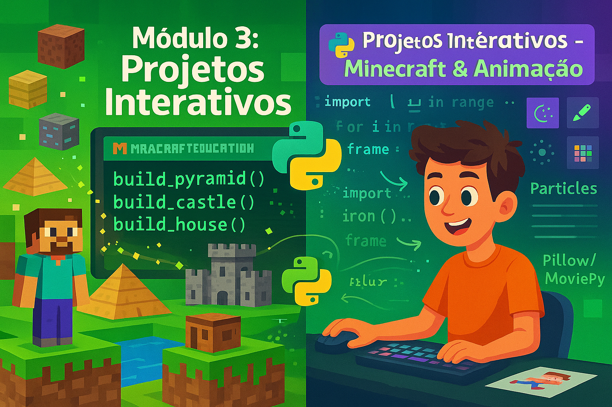

Programe no Minecraft e crie animações incríveis com Python
Neste módulo, você vai expandir seus horizontes programando em um dos jogos mais populares do mundo - o Minecraft - e criando animações e gráficos com Python. Verá como o código pode controlar ambientes 3D e gerar conteúdo visual dinâmico.
O Minecraft Education Edition permite que você programe dentro do jogo usando Python. Você pode criar blocos, construir estruturas gigantes e até fazer minijogos - tudo com código!
pip install mcpiAlternativa gratuita: Use RaspberryJuice plugin com Minecraft Java Edition
Imagine que você tem um controle remoto mágico (Python) que pode comandar o mundo do Minecraft. Com alguns comandos simples, você pode fazer aparecer blocos, teleportar seu personagem ou construir castelos instantaneamente!
from mcpi.minecraft import Minecraft
import mcpi.block as block
# Conectar ao Minecraft
mc = Minecraft.create()
# Enviar mensagem no chat
mc.postToChat("Python está conectado!")
# Obter posição do jogador
pos = mc.player.getPos()
print(f"Você está em: {pos.x}, {pos.y}, {pos.z}")
# Criar um bloco de diamante
mc.setBlock(pos.x + 1, pos.y, pos.z, block.DIAMOND_BLOCK)
A biblioteca mcpi estabelece conexão via socket TCP/IP com o servidor Minecraft, enviando comandos através do protocolo Minecraft PI. A API fornece métodos para manipulação de blocos, entidades, câmera e eventos do jogo.
from mcpi.minecraft import Minecraft
from mcpi import block
from mcpi.vec3 import Vec3
import time
class MinecraftBuilder:
def __init__(self):
self.mc = Minecraft.create()
self.player_pos = None
def get_player_position(self):
"""Retorna posição atual do jogador como Vec3"""
return self.mc.player.getPos()
def build_cube(self, center, size, block_type):
"""Constrói um cubo de blocos"""
x, y, z = int(center.x), int(center.y), int(center.z)
half = size // 2
self.mc.setBlocks(
x - half, y, z - half,
x + half, y + size, z + half,
block_type
)
def build_pyramid(self, base_pos, height, block_type):
"""Constrói uma pirâmide"""
x, y, z = int(base_pos.x), int(base_pos.y), int(base_pos.z)
for level in range(height):
size = height - level
self.mc.setBlocks(
x - size, y + level, z - size,
x + size, y + level, z + size,
block_type
)
# Uso
builder = MinecraftBuilder()
pos = builder.get_player_position()
builder.build_pyramid(Vec3(pos.x + 10, pos.y, pos.z), 10, block.GOLD_BLOCK)Vamos criar um script que constrói estruturas automaticamente no Minecraft:
from mcpi.minecraft import Minecraft
from mcpi import block
import time
mc = Minecraft.create()
def construir_casa(x, y, z):
"""Constrói uma casa simples"""
# Paredes (pedra)
mc.setBlocks(x, y, z, x + 10, y + 5, z + 8, block.STONE)
# Oco interior (ar)
mc.setBlocks(x + 1, y, z + 1, x + 9, y + 4, z + 7, block.AIR)
# Porta
mc.setBlocks(x + 5, y, z, x + 6, y + 2, z, block.AIR)
# Janelas
mc.setBlock(x, y + 2, z + 4, block.GLASS)
mc.setBlock(x + 10, y + 2, z + 4, block.GLASS)
# Telhado (madeira)
for i in range(11):
altura_telhado = 5 - abs(5 - i) // 2
mc.setBlocks(
x + i, y + 5 + altura_telhado, z - 1,
x + i, y + 5 + altura_telhado, z + 9,
block.WOOD_PLANKS
)
mc.postToChat("Casa construída!")
def construir_torre(x, y, z, altura):
"""Constrói uma torre"""
# Base da torre
mc.setBlocks(x, y, z, x + 5, y + altura, z + 5, block.STONE_BRICK)
# Oco interior
mc.setBlocks(x + 1, y, z + 1, x + 4, y + altura - 1, z + 4, block.AIR)
# Escada em espiral
for h in range(0, altura, 2):
if h % 4 == 0:
mc.setBlock(x + 2, y + h, z + 1, block.STAIRS_WOOD)
elif h % 4 == 2:
mc.setBlock(x + 4, y + h, z + 2, block.STAIRS_WOOD)
# Topo com ameias
for i in range(6):
for j in range(6):
if (i + j) % 2 == 0 and (i == 0 or i == 5 or j == 0 or j == 5):
mc.setBlock(x + i, y + altura + 1, z + j, block.STONE_BRICK)
mc.postToChat(f"Torre de {altura} blocos construída!")
# Obter posição do jogador
pos = mc.player.getPos()
# Menu interativo
mc.postToChat("Escolha: 1=Casa, 2=Torre")
escolha = input("Digite 1 ou 2: ")
if escolha == "1":
construir_casa(int(pos.x) + 5, int(pos.y), int(pos.z) + 5)
elif escolha == "2":
altura = int(input("Altura da torre (5-50): "))
construir_torre(int(pos.x) + 5, int(pos.y), int(pos.z) + 5, altura)Pillow (PIL) é uma biblioteca poderosa para manipular imagens em Python.
pip install Pillowfrom PIL import Image, ImageDraw, ImageFont, ImageFilter
# Criar uma imagem nova
largura, altura = 400, 300
img = Image.new('RGB', (largura, altura), color='skyblue')
# Desenhar formas
draw = ImageDraw.Draw(img)
# Círculo (sol)
draw.ellipse([50, 50, 150, 150], fill='yellow', outline='orange', width=3)
# Retângulo (casa)
draw.rectangle([200, 150, 350, 250], fill='brown', outline='black', width=2)
# Triângulo (telhado)
draw.polygon([(200, 150), (275, 80), (350, 150)], fill='red', outline='darkred')
# Texto
try:
font = ImageFont.truetype("arial.ttf", 24)
except:
font = ImageFont.load_default()
draw.text((150, 270), "Minha Casa", fill='black', font=font)
# Salvar
img.save('minha_arte.png')
img.show()
print("Imagem criada!")from PIL import Image, ImageFilter
# Abrir imagem existente
img = Image.open('foto.jpg')
# Aplicar filtros
img_blur = img.filter(ImageFilter.BLUR)
img_sharpen = img.filter(ImageFilter.SHARPEN)
img_edge = img.filter(ImageFilter.FIND_EDGES)
img_contour = img.filter(ImageFilter.CONTOUR)
# Salvar resultados
img_blur.save('foto_blur.jpg')
img_sharpen.save('foto_sharpen.jpg')
img_edge.save('foto_edges.jpg')
print("Filtros aplicados!")Vamos criar uma animação simples de uma bola quicando:
from PIL import Image, ImageDraw
def criar_frame_bola(posicao_y, tamanho=400):
"""Cria um frame com a bola em uma posição Y"""
img = Image.new('RGB', (tamanho, tamanho), color='white')
draw = ImageDraw.Draw(img)
# Desenhar bola
raio = 30
x_centro = tamanho // 2
draw.ellipse([
x_centro - raio, posicao_y - raio,
x_centro + raio, posicao_y + raio
], fill='red', outline='darkred', width=2)
# Desenhar chão
draw.line([(0, tamanho - 20), (tamanho, tamanho - 20)], fill='black', width=3)
return img
# Criar frames da animação
frames = []
tamanho = 400
chao_y = tamanho - 50
# Bola caindo
for y in range(50, chao_y, 10):
frames.append(criar_frame_bola(y, tamanho))
# Bola subindo
for y in range(chao_y, 50, -10):
frames.append(criar_frame_bola(y, tamanho))
# Salvar como GIF
frames[0].save(
'bola_quicando.gif',
save_all=True,
append_images=frames[1:],
duration=50, # 50ms por frame
loop=0 # Loop infinito
)
print("GIF animado criado: bola_quicando.gif")from PIL import Image, ImageDraw
def desenhar_personagem(img, x, y, frame):
"""Desenha um personagem simples que anda"""
draw = ImageDraw.Draw(img)
# Cabeça
draw.ellipse([x - 15, y - 40, x + 15, y - 10], fill='peachpuff', outline='black')
# Corpo
draw.rectangle([x - 10, y - 10, x + 10, y + 20], fill='blue', outline='black')
# Braços (movimento)
angulo_braco = (frame % 20) - 10
draw.line([x - 10, y, x - 20, y + angulo_braco], fill='peachpuff', width=4)
draw.line([x + 10, y, x + 20, y - angulo_braco], fill='peachpuff', width=4)
# Pernas (movimento)
perna_offset = (frame % 20) - 10
draw.line([x - 5, y + 20, x - 5 - perna_offset, y + 40], fill='blue', width=4)
draw.line([x + 5, y + 20, x + 5 + perna_offset, y + 40], fill='blue', width=4)
# Criar animação de caminhada
frames = []
for i in range(40):
img = Image.new('RGB', (400, 200), color='lightgreen')
# Personagem se movendo
x_pos = 50 + (i * 8)
desenhar_personagem(img, x_pos, 100, i)
frames.append(img)
# Salvar animação
frames[0].save(
'personagem_andando.gif',
save_all=True,
append_images=frames[1:],
duration=100,
loop=0
)
print("Animação de personagem criada!")Para animações mais complexas e com vídeo, use a biblioteca MoviePy:
pip install moviepyMoviePy permite editar vídeos, adicionar efeitos, texto, áudio e muito mais!
Agora que você completou o Módulo 3, visite o Observatório do Futuro para revisar todos os conceitos de Minecraft, Python e Animações através de flash cards interativos!